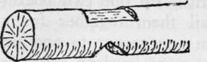

Cabin Building And Fitting Up. Part 2
Description
This section is from the book "Camping And Woodcraft", by Horace Kephart. Also available from Amazon: Camping and Woodcraft.
Cabin Building And Fitting Up. Part 2
The features of good and bad sites are discussed in Vol. I., pp. 208-214.
Do not dig a cellar under the house. A cellar not cemented is a trap for water, especially when the snow begins to melt. A small cache may be dug under the center of the floor, where it will stay, dry.
Timber
The logs should be straight and of slight taper, the best of the smaller ones being reserved for floor and roof timbers. Those for the sills should be at least a foot thick, but the upper courses may be smaller. The wood must be of some species that is light and easy to work. Choice will depend, of course, upon what is available. The best common woods are the soft pines, spruce, and young chestnut. Sills should be of wood that is -itiff and durable (see tables in Chapter XII). They may be cut long enough to support the porch, if one is to be built. Tall, straight, slender trees are common among the younger growth wherever the stand of timber is dense.
Logs are best cut in spring or early summer, as the bark then can be peeled with ease. If it is left on, it soon begins to loosen, moisture and insects get under it, and decay sets in. Pine logs, even after they are peeled, are attacked by "sawyers" (wood-boring larvae of beetles) which advertise their work by a creaking sound and by wood-dust dropped from their borings. They work just under the surface, in a girdling way, do no serious damage, and cease operations after the first season.
Cut the wall logs about three feet longer than the inside dimensions of the room, so as to allow eighteen inches at each end for jointing, unless you adopt one of the ways of building without notches to be described hereafter. I have already told how to select good board trees for the roofing.
Corners
If the building site happens to be of sand or gravel, and is flat, the sills may be laid directly on the ground ,* but if the place is not level, or if there is soil on the surface, you should set them up on piers or posts.
Stake out the corners, and square them by the method shown in Fig 18. At each corner set Up either a pier of flat rocks or a heavy post.
These should go down in the ground below frost-line, and project just enough to keep the sills off the ground all the way round. Lay the two sills and level them by hewing out underneath or blocking up, and testing with the level on your square. Tc make a good job of this, rip out two boards about six inches wide, nail them together for a straight-edge reaching from one corner to another diagonally opposite, and use your level on the center of the straight-edge, where it is most likely to sag. When the sills are level and squared, block them up near the center of each with rocks, to keep them from springing and sagging. The tops ot the sills and floor joists are to be scored and hewn flat.
After laying the sills, dig down at the chimney end to a solid base and lay a rock foundation for chimney and hearth (Fig. 76^), the latter to project about two feet inward from front of fireplace. Make corbels or some other arrangement for inner ends of floor joists to rest on where they meet this foundation.
Locking Corners
Wall logs usually are locked together at the corners by notching. There are several ways of doing this. The quickest is the saddle notch (Fig. 70) which has a wedge-shaped cut on top of lower log and a V-notch in bottom of the one that rides on it. This work is done by eye alone, and calls for expert axemen.
Another is the rounded notch (Fig. 71) cut nearly half-way through on under side of log. It takes some trouble to round out the notch, but a neat fit results. There might be a shallower rounded notch cut on both top and bottom of each log, to make the logs lie close together; but the upper one would collect moisture and then decay would set in.
A third way is to saw and split out one-fourth the diameter on each side of the end (Fig. 72), leaving the center like a tenon, and spike the ends together. This makes close joints, and shorter logs are used, as the ends do not project. It is best adapted to poles of six-inch diameter and under, which do not require large spikes.
Fig. 70. Saddle notch.
Fig. 71. Round notch.
A very good way, especially for amateurs, is to saw the logs to exact dimensions of inierior of room designed, and spike the ends to an L-shaped "trough" of heavy plank (Fig. 73) which, when set on end, will reach to the height of the walls. First lay the four bottom logs, and spike the troughs upright to the corners, having, of course, plumbed and braced them in position. Then proceed similarly with the other logs until walls are finished. This makes close joints that require little chinking, if the logs are straight. Finish the open corners by quartering a large log, or hewing four small ones, cut to height of walls, and nailing them to the troughs as shown. This is easier and quicker than notching. If you choose this plan, take along some 2-inch plank for the troughs, as thinner stuff is not stiff or strong enough; also some 6od nails or spikes.
Fig. 72. Tenon-shaped end.
Fig. 73. "Trough'* corner.
Joists And Walls
Having fitted cross logs tq the sills, test again to insure that all is square. Then fit the ends of the joists into gains chiseled out of the sills (Fig. 74). The logs for joists should be fully eight inches, thick, or they will be too springy. They may be spaced about two feet apart from center to center. Different thicknesses can be allowed for in shaping them to the gains, so that all may be level.
Continue to:
- prev: Chapter XIV. Cabin Building And Fitting Up
- Table of Contents
- next: Cabin Building And Fitting Up. Part 3